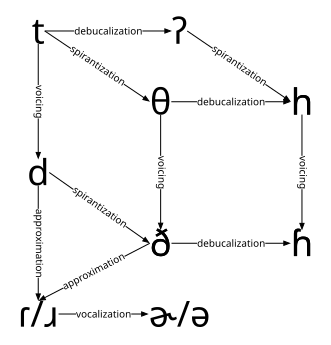

| phonemes |
|---|
| /dɑɹg/ |
| /blɪk/ |
Phonotactics & Alternations
Possible vs Impossible Words
When you know a language’s sound system, you know more than just the actual words. You also know what are impossible words for that language.
Possible vs Impossible Words
English
Actual words
| meaning | phonemes |
|---|---|
| dog | /dɔg/ |
| blue | /bluː/ |
Possible words
Impossible words
| phonemes |
|---|
| /ndɔg/ |
| /tlɪk/ |
Possible vs Impossible Words
/blɪk/ vs */tlɪk/
Neither are actual words of English.
They’re both physically possible to pronounce.
These are both possible words in some languages.
One thing you just know, when you know English, is that */tl/ is not a possible onset.
Phonotactic Constraints
- Phono-
-
Sound
- -tactic
-
touching
Phonotactic Constraints
There’s more to it than just the absence of a sequence of sounds.
fl
| flee | fli: |
| flute | flut |
fr
| free | fɹi: |
| fry | fɹaɪ |
vl
| vlog | vlɑg |
vr
??
Phonotactic Constraints
“fankle” is a word sometimes used in Scotland that means “to get all tangled up.”
Phonotactic Constraints
Nasal Assimilation is a really common kind of phonotactic repair.
Phonotactic repairs can sometimes lead to alternations.
Alternations
| un- | /ʌn/ |
| undone | ʌndʌn |
| untold | ʌntold |
| uncaring | ʌŋkeɹɪŋ |
| uncool | ʌŋkul |
| unpopular | ʌmpɑpjulɹ̩ |
| unpaid | ʌmpeɪd |
Alternations
Common Kinds of Alternations
Some kinds of alternations are so common they have specific names:
- Assimilation
-
Two segments becoming more similar
- Lenition
-
Weakening (becoming more sonorous)
- Deletion
- Deletion of a segment
- Dissimilation
-
Two segments becoming more different
- Fortition
-
Strengthening (becoming less sonorous)
- Epenthesis
- Insertion of a segment
Lenition
